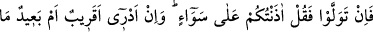
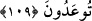

“De ki: “Bana sâdece, sizin ilâhınızın ancak bir tek Allah olduğu vahyedildi.” Yâni
bana sizin ancak bir tek ilâhtan başka ilâhınız olmadığı vahyolundu. Hâsılı bana
tevhîdden başka bir şey vahyedilmedi. Hz. Peygamber (a.s.)’a hem tevhid hem de diğer
hükümler vahyedildiği halde burada vahyedilenin tevhidle sınırlanması, Hz. Peygamber
(s.a.)’in gönderilmesindeki asıl maksad olmasındandır. Onun dışındakiler ise ondan
doğup çıkarlar.
Şeyhzâde şöyle der: “Âyetteki bu sınırlamadan Allah’ın vahdâniyet sıfatından başka
bir sıfatla vasfedilmemesini gerektirir. Halbuki Allah Teâlâ’nın sayılamayacak kadar
celâl ve cemâl sıfatları vardır.” denirse, bunun cevabı şöyledir: Buradaki sınırlama,
hakîkî değildir. Çünkü asıl maksad müşriklerin Allah’a isnâd ettikleri sıfatları
reddetmektir.
“Hâla müslüman olmayacak mısınız?” Yâni ibâdeti Allah Teâlâ’ya has kılmayacak
mısınız? İbâdeti O’na tahsis etmeyecek misiniz? Acaba siz ilâhî vahyin gereğine itâat
edenlerden misiniz?
“Fehel”in başındaki “fe” harfi, kendisinden önceki kısmın kendisinden sonrasını
gerekli kıldığına delâlet etmek içindir. Yâni akıllı kişi, bu “fe” harfinden önceki kısım
kendisine okunduktan sonra kendi nefsi ile baş başa bırakılırsa, tevhîd konusunda
tereddüde düşmemesi, ona itâat ve kabûl etmesi gerekir, hattâ bu zorunluluktur.
109. Eğer yüz çevirirlerse de ki: “(Bana emrolunanı) hepinize açıkladım. Artık
size vâdolunan şey (mahşerde toplanma zamânınız) yakın mı uzak mı, bilmiyorum.”
“Eğer” İslâm’dan “yüz çevirirlerse” vahyin vâcib kıldığı hususlara iltifât etmezlerse
onlara “de ki:” “Bana emrolunan tevhîdin ve tenzîhin vâcib olduğunu “hepinize
açıkladım.” Onu bildirmek hususunda hepinizi bir tuttum. İçinizden hiç birini
seçmedim. Nasihat etme ve risâletin tebliği konusunda aranızda hiç fark gözetmedim.
“Artık” müslümanların gâlip gelmesi, İslâm dininin üstünlük sağlaması ya da gelmesi
şüphesiz olan haşr gibi “size vaad olunan şey yakın mı uzak mı, bilmiyorum.” Ama
şurası muhakkak ki size azâb ve zillet mutlaka ulaşacaktır.
el-Es’iletü’l-Mukhime’de şöyle der: “Nasıl olur da Peygamberimiz (a.s.)’a böyle
söylemesi emredilir. Halbuki Allah Teâlâ: “Gerçek vaad yaklaştı.” (el-Enbiyâ, 21/97)
buyurmaktadır?” denilirse, biz buna cevâben şöyle deriz: Bu yaklaştığı söylenen
kıyâmet günüdür ki o yakındır.
Nitekim Allah Teâlâ: “İnsanların hesapları yaklaştı.” (el-Enbiya, 21/1)
buyurmuştur.